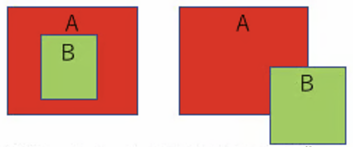

第8回 地理空間データの活用1¶
商圏分析とハザード判定
🎯 到達目標¶
「地理座標系（WGS84）」と「投影座標系（平面直角座標系）」の違いを完全に説明でき、適切なタイミングで
.to_crs()を使ったメートル変換ができる。日本国内の狭い範囲をメートル単位で正確に計算するための「平面直角座標系（19の系）」の使い分け（特に関東をカバーする「第9系：EPSG:6677」）を理解する。
商圏バッファ（
.buffer()） を用いて、店舗や駅から指定距離（メートル）のサークル・影響帯を正確に生成し、重ね合わせて可視化できる。いびつな形状の行政区ポリゴンから、中心点となる 「重心（
.centroid）」 を全自動で算出し、代表ピンを配置できる。空間結合（Spatial Join:
gpd.sjoin()） の仕組みを理解し、経緯度の「点」がどの「境界線（面）」に含まれているかを、共通キーなしで物理的な重なりだけで全自動マージできる。点・線・面の空間関係（
intersects,within,contains）を使い分け、ハザードエリアと店舗の重なりを検出する「ハザード自動判定パイプライン」を構築できる。
練習問題のGoogle Colab起動¶

上記の「Open In Colab」をクリックして、Google Colabを起動させてください
[ファイル] → [ドライブにコピーを保存] を選択して、Googleドライブにコピーを保存してください
保存が成功すると，Googleドライブの「マイドライブ」 →「Colab Notebooks」にコピーしたファイルが保存されます。
GoogleドライブにコピーしたGoogle ColabのNotebooksを開いてください
開いたGoogle ColabのNotebooksで作業をしてください
座標参照系（CRS）の高度な変換¶
地球上のどこにいるかを「経度・緯度（角度）」で表す世界共通のルールである WGS84（EPSG:4326） を学びました。
スマートフォンのGPSや、Google Mapsで現在地を表示する分には、この経緯度が最も扱いやすいデータです。
しかし、実務のデータ分析（GIS分析）において、経緯度（WGS84）のままで計算は角度なのでそのまま計算することはできません。
🚨 「度」と「メートル」の混同¶
例えば、「池袋店から半径500mの円」を作ろうとして、経緯度のデータのまま以下のようなコードを実行したとします。
# ⚠️ 経緯度データ(WGS84)のまま、バッファを計算してしまう失敗コード
gdf_shops["商圏500m"] = gdf_shops.geometry.buffer(500)
このプログラムを実行すると、エラーは出ません。 しかし、地図を描画してみると、日本中（地球上）がすべて真っ青な巨大な円で埋め尽くされ、宇宙空間にまで届くような半径500度（地球1周は360度）の巨大サークルが作られてしまいます。
【なぜこれが起きるのか？】
EPSG:4326（WGS84経緯度）のデータの単位は 「度（Degree）」 です。GeoPandasの空間演算（
.buffer()や.distance()など）は、「そのデータが今持っている座標系の単位」をそのまま数値として使います。そのため、プログラムは「半径500メートル」ではなく、「半径500度」の円を作ろうとしてしまうのです。1度は約111kmですので、500度は約5万5千kmとなり、地球を1周半する巨大なバケツのような円が出来上がってしまいます。
【 間違った処理：単位は「度」 】 【 正しい処理：単位は「メートル」 】
WGS84 (EPSG:4326) のまま .buffer(500) 平面直角 (EPSG:6677) に変換後 .buffer(500)
地球 (1周360度) 店舗 Point
╭━━━━━━━━━━━━━╮ ○
┃ ┌─────────┐ ┃ ◀ 半径500度 ┌───┼───┐
┃ │ 巨大円 │ ┃ (地球を包む) │ 500m円│ ◀ 半径500メートル
┃ └─────────┘ ┃ └───┼───┘
╰━━━━━━━━━━━━━╯ │
計算を行う前に、データの単位を角度（度）からメートルに変換する」というステップが必要となります
🗺️ 日本独自の「19の平面直角座標系」¶
丸い地球を平面のメートル座標に直すとき、日本全体を1つの平面で表そうとすると、端の方（北海道や沖縄）で大きな歪みが生じてしまいます。
日本の国土地理院は、日本を南北に細かく 19の地域（系） に分割し、それぞれの地域で最も歪みが少なくなるメートル単位の座標系を定義しました。これを 「平面直角座標系（JGD2011）」 と呼びます。
平面直角座標系（JGD2011）では、誤差数センチという極めて正確なメートル計算が可能になります。

※ 平面直角座標系は「平成14年国土交通省告示第9号」で定義されいる。
| 系番号 | EPSGコード（JGD2011） | 適用区域 (単位はメートル) |
|---|---|---|
| 1（Ⅰ） | EPSG:6669 |
長崎県・鹿児島県（名瀬市、十島村、笠沙町（島しょ部）、里村、上甑村、下甑村、鹿島村、大和村、宇検村、瀬戸内町、住用村、龍郷町、笠利町、喜界町、徳之島町、天城町、伊仙町、和泊町、知名町、与論町、三島村） |
| 2（Ⅱ） | EPSG:6670 |
福岡県・佐賀県・熊本県・大分県・宮崎県・鹿児島県（西之表市、中種子町、南種子町、上屋久町、屋久町、三島村、島しょ部を除く全ての市町村） |
| 3（Ⅲ） | EPSG:6671 |
山口県・島根県・広島県 |
| 4（Ⅳ） | EPSG:6672 |
香川県・愛媛県・徳島県・高知県 |
| 5（Ⅴ） | EPSG:6673 |
兵庫県・鳥取県・岡山県 |
| 6（Ⅵ） | EPSG:6674 |
京都府・大阪府・福井県・滋賀県・三重県・奈良県・和歌山県 |
| 7（Ⅶ） | EPSG:6675 |
石川県・富山県・岐阜県・愛知県 |
| 8（Ⅷ） | EPSG:6676 |
新潟県・長野県・山梨県・静岡県 |
| 9（Ⅸ） | EPSG:6677 |
東京都（島しょ部を除く全ての市町村、23区，大島町、利島村、新島村、神津島村、三宅村、御蔵島村、八丈町、青ケ島村）・福島県・栃木県・埼玉県・千葉県・群馬県・神奈川県 |
| 10（Ⅹ） | EPSG:6678 |
青森県・秋田県・山形県・岩手県・宮城県 |
| 11（Ⅺ） | EPSG:6679 |
小樽市・函館市・伊達市・胆振支庁管内のうち有珠郡・檜山支庁管内・後志支庁管内・渡島支庁管内 |
| 12（Ⅻ） | EPSG:6680 |
札幌市・旭川市・稚内市・留萌市・美唄市・夕張市・岩見沢市・苫小牧市・室蘭市・士別市・名寄市・芦別市・赤平市・三笠市・滝川市・砂川市・江別市・千歳市・歌志内市・深川市・紋別市・富良野市・登別市・恵庭市・北広島市・石狩市・石狩支庁管内・網走支庁管内のうち紋別郡・上川支庁管内・宗谷支庁管内・日高支庁管内・胆振支庁管内（有珠郡及び虻田郡を除く）・空知支庁管内・留萌支庁管内 |
| 13（ⅩⅢ） | EPSG:6681 |
北見市・帯広市・釧路市・網走市・根室市・根室支庁管内・釧路支庁管内・網走支庁管内（紋別郡を除く）・十勝支庁管内 |
| 14（ⅩⅣ） | EPSG:6682 |
東京都のうち、小笠原村(聟島列島、父島列島、母島列島、硫黄島) |
| 15（ⅩⅤ） | EPSG:6683 |
沖縄県のうち、那覇市、石川市、具志川市、宜野湾市、浦添市、名護市、糸満市、沖繩市、国頭村、大宜味村、東村、今帰仁村、本部町、恩納村、宜野座村、金武町、伊江村、与那城町、勝連町、読谷村、嘉手納町、北谷町、北中城村、中城村、西原町、豊見城村、東風平町、具志頭村、玉城村、知念村、佐敷町、与那原町、大里村、南風原町、仲里村、具志川村、渡嘉敷村、座間味村、粟国村、渡名喜村、伊平屋村、伊是名村 |
| 16（ⅩⅥ） | EPSG:6684 |
沖縄県のうち、平良市、石垣市、城辺町、下地町、上野村、伊良部町、多良間村、竹富町、与那国町 |
| 17（ⅩⅦ） | EPSG:6685 |
沖縄県のうち、南大東村、北大東村 |
| 18（ⅩⅧ） | EPSG:6686 |
東京都のうち、小笠原村(沖ノ鳥島) |
| 19（ⅩⅨ） | EPSG:6687 |
東京都のうち、小笠原村 (南鳥島) |
※ 市町村の名称は合併等のため現在は異なる名称となっている場合がある。
選び方のルール:
分析したいエリアが「東京や武蔵大学周辺（関東）」であれば、「第9系（EPSG:6677）」 を選びます。
「大阪や京都（近畿）」であれば、「第6系（EPSG:6674）」 を選びます。
💻 ハンズオン¶
.to_crs() による座標変換
実際に、Google Colab上で緯度経度の店舗データを、関東をカバーする「第9系（EPSG:6677）」に変換し、データフレームの中身がどう変化するかを確認してみましょう。
import pandas as pd
import geopandas as gpd
from shapely.geometry import Point
# 1. 緯度経度の店舗データを用意（通常のPandas DataFrame）
# 江古田店、白山店の緯度経度
df_shops_raw = pd.DataFrame({
"店舗名": ["江古田店", "白山店"],
"経度(Lng)": [139.6732, 139.7523], # X軸
"緯度(Lat)": [35.7371, 35.7215] # Y軸
})
# 2. 経度・緯度から Point オブジェクトを作成（X, Yの順序に注意！）
geometry = [Point(xy) for xy in zip(df_shops_raw["経度(Lng)"], df_shops_raw["緯度(Lat)"])]
# 3. GeoPandasのデータフレームを作成（最初は WGS84 = EPSG:4326 を指定）
gdf_shops = gpd.GeoDataFrame(df_shops_raw, geometry=geometry, crs="EPSG:4326")
print("--- 変換前：世界測地系 (EPSG:4326) ---")
print("データの座標系情報:", gdf_shops.crs)
# geometry 列の値が [POINT (139.6732 35.7371)] のように角度（度）になっているのを確認してください
display(gdf_shops[["店舗名", "geometry"]])
# 4. 【魔法の変換】関東の平面直角座標系「第9系(EPSG:6677)」にメートル変換！
gdf_shops_meter = gdf_shops.to_crs(epsg=6677)
print("\n--- 変換後：平面直角座標系第9系 (EPSG:6677) ---")
print("データの座標系情報:", gdf_shops_meter.crs)
# geometry 列の値が [POINT (-11543.12 37432.45)] のような巨大なメートル数値に変わっているのを確認してください！
# これは「第9系の原点（日本経緯度原点付近）」から、南西に何メートル、北東に何メートル離れているかを表しています。
display(gdf_shops_meter[["店舗名", "geometry"]])
商圏バッファ（.buffer()）と重心（.centroid）¶
座標系がメートル単位（EPSG:6677）に変換できたら、「空間演算」に入ります。
商圏バッファ（.buffer()）の作成¶
商圏バッファとは、「店舗や駅から、指定したメートル距離の範囲を塗りつぶした面（Polygon）を自動生成する処理」です。
GeoPandasでは、地理データフレームに対して .buffer(距離) を実行するだけで、一瞬で円や帯（ポリゴン）を生成してくれます。
# 平面直角座標系(メートル)のデータフレームに対して、半径1000mの円を作る
gdf_shops_meter["商圏1km"] = gdf_shops_meter.geometry.buffer(1000)
gdf_shops_meter
このコードを実行すると、gdf_shops_meter の中に、店舗を中心とする半径1kmの「ポリゴン（多角形）」が新しい列として追加されます。
💡 解像度 resolution の指定¶
.buffer() の中に、resolution=30 のようなオプションを指定することができます。
バッファは、コンピュータ上では「多角形（カクカクした24角形や32角形など）」として描かれます。
この解像度（カクカクの細かさ）を標準よりも大きく指定することで、ギザギザのない滑らかで美しい「本物の円」を描くことができます（実務で地図を美しく見せるためのプロの定番設定です）。
# 滑らかな円を描く設定
gdf_shops_meter["商圏1km"] = gdf_shops_meter.geometry.buffer(1000, resolution=30)
💻 商圏バッファの可視化¶
店舗の周りに「半径1,000m（1km）」の商圏円を描き、背景地図の上に重ね合わせて描画してみましょう。
!pip install -q japanize-matplotlib
import matplotlib.pyplot as plt
import japanize_matplotlib
# 1. 前のセクションで作成した gdf_shops_meter (EPSG:6677) を使用します
# 店舗の geometry 列に対して、1000m のバッファを生成し、新しいデータフレームを作成
gdf_buffers = gdf_shops_meter.copy()
# geometry 列を1000mのバッファ（円ポリゴン）で上書きする
gdf_buffers["geometry"] = gdf_shops_meter.geometry.buffer(1000, resolution=30)
# 2. 地図の描画（Matplotlibを使って重ね合わせます）
fig, ax = plt.subplots(figsize=(8, 8))
# まず、背景として店舗の「1km商圏バッファ」を、半透明の緑色で描画
gdf_buffers.plot(ax=ax, color="green", alpha=0.3, edgecolor="darkgreen", label="1km商圏")
# その上に、店舗の「位置（ピン・点）」を赤い点で重ねて描画
gdf_shops_meter.plot(ax=ax, color="red", markersize=100, marker="^", label="店舗位置")
# グラフの装飾
for idx, row in gdf_shops_meter.iterrows():
# geometryからX座標、Y座標を取り出して、店舗名のテキストラベルを表示
ax.text(row.geometry.x + 100, row.geometry.y + 100, row["店舗名"], fontsize=12, fontweight="bold")
plt.title("店舗別 1km商圏シミュレーション (平面直角座標第9系)")
plt.grid(True, linestyle=":", alpha=0.5)
plt.xlabel("X座標 (メートル)")
plt.ylabel("Y座標 (メートル)")
plt.show()
行政区画の「重心（.centroid）」の算出¶
実務で、「新宿区」や「練馬区」といったいびつな境界線（ポリゴン）を持つデータに対して、
「新宿区の中心に、区を代表するテキストラベルを貼りたい」
「各区の広がりを1つの代表ピン（点）に落とし込んで計算したい」 という局面があります。
このとき、いびつな多角形の「幾何学的な中心（重さのバランスが取れる中心点）」を全自動で求めてくれるのが、.centroid（セントロイド：重心）属性です。
【重心算出のイメージ（いびつな多角形から点へ）】
いびつな行政区（Polygon） 中心点（Centroid: Point）
╭━━━━━━━━━━━━━━━━╮ ╭━━━━━━━━━━━━━━━━╮
┃ ┃ ──.centroid──▶ ┃ ★ ┃
┃ ┃ ┃ (数学的な中心) ┃
╰━━━━━━━━━━━━━━━━╯ ╰━━━━━━━━━━━━━━━━╯
import geopandas as gpd
from shapely.geometry import Point, Polygon
poly_nerima = Polygon([(139.60, 35.72), (139.66, 35.72), (139.66, 35.76), (139.60, 35.76)]) # 練馬区簡易
poly_toshima = Polygon([(139.66, 35.72), (139.73, 35.72), (139.73, 35.76), (139.66, 35.76)]) # 豊島区簡易
gdf_districts = gpd.GeoDataFrame({
"区名": ["練馬区", "豊島区"]
}, geometry=[poly_nerima, poly_toshima], crs="EPSG:4326")
# 各ポリゴンの中心（Point）を求めて、新しい列に代入する
# 平面直角座標系(9系: 東京都・埼玉県など)に変換してから重心を計算して、EPSG:4326に戻す
gdf_projected = gdf_districts.to_crs(epsg=6677)
gdf_districts["中心点"] = gdf_projected.geometry.centroid.to_crs(epsg=4326)
gdf_districts
空間結合（Spatial Join: gpd.sjoin()）の真髄¶
Pandasの pd.merge() を使い、共通の「店舗名」や「商品ID」といったキーワード（キー列）を架け橋にして2つの表を横に合体させる「結合」をしました。
しかし、地理空間情報（GIS）の世界では、以下のような事態があります。
「店舗の経緯度データ」と「練馬区や豊島区の境界線（ポリゴン）データ」がある。
この2つの表には、「店舗名」や「住所」といった共通のキーワードは1列も存在しない。
しかし、「どの店舗がどの区の境界線の中（物理的）に含まれているか」を判定して、2つの表を結合したい。
このように、共通キーが一切存在しなくても、「物理的な位置の重なり、交差、包含関係」だけを頼りにして、2つの地理データフレームを全自動でマージする究極の処理が、
「空間結合（Spatial Join：gpd.sjoin()）」です。
【空間結合（sjoin）のビジュアルイメージ】
[ 店舗 Point ] ──▶ [ 行政区区画 Polygon ] ──▶ [ gpd.sjoin() で結合！ ]
江古田店 (GPS) 豊島区 (境界線) 「江古田店 ＝ 豊島区」と
白山店 (GPS) 文京区 (境界線) 物理的な包含でマージされる！
空間演算の例 （他にも多数の空間演算があります）
Contains - AがBを含んでいるのかのかチェックする
Intersects - AとBが重なっているのかチェックする
{kind=link}

📦 空間結合の基本コードと引数¶
空間結合は、GeoPandasの gpd.sjoin() 関数を使います。
# 空間結合を実行するコード
joined_gdf = gpd.sjoin(
left_df=gdf_shops, # 左側の地理データフレーム（例：店舗Point）
right_df=gdf_districts, # 右側の地理データフレーム（例：市区町村Polygon）
how="left", # 結合方式（左の店舗データを1件も消さない場合は left）
predicate="intersects" # 空間関係（intersects = 物理的に重なっている・交差している）
)
joined_gdf
🛠️ 引数の詳細な意味¶
left_dfとright_df: 結合したい2つのGeoDataFrameを指定します。通常、左側（left_df）に残したいメインのデータ（店舗など）を配置します。how: Pandasのmergeと同様に、"left"、"right"、"inner"が選べます。how="left"：左側の店舗データをすべて残します。もし、どの区のポリゴンにも属していない（例えば海の上にある、あるいは東京都外にある）店舗があった場合は、区名の列にはNaNが入ります。how="inner"：両方の位置が完全に重なるものだけを残します。区のポリゴン外にある店舗は、データから消去されます。
predicate（空間関係）: 結合する際の「重なり方の判定基準」を指定します。非常に重要なパラメータですので、次のセクションで図解します。
空間関係（Predicates）の使い分けとハザード判定¶
空間結合や、空間フィルターを行う際、点・線・面が「どのように重なっているか」の条件分岐を指定する必要があります。GeoPandasでは主に以下の3つの空間関係が使われます。
3大空間関係の物理的な意味¶
点（Point）、線（LineString）、面（Polygon）の関係性を、以下の図とアスキーアートで直感的にイメージしましょう。
① intersects (交差する：最も使いやすい超万能判定)
- 2つの図形が、一部でも「重なっている」「触れている」状態。
- 点が面の中にある場合も、線が面を横切る場合も、すべてTrueになります。
Polygon Polygon
╭━━━━━━━━━━━━━╮ ╭━━━━━━━━━━━━━╮
┃ ○ (点) ┃ (True) ┃ ───○─── (線)┃ (True)
╰━━━━━━━━━━━━━╯ ╰━━━━━━━━━━━━━╯
② within (〜の中に含まれる：主語が「小さい側」のときに使う)
- 左側の図形が、右側の図形の中に「すっぽり完全に収まっている」状態。
- 「店舗（点） within 行政区（面）」➡ 店舗が区の中に完全に入っていればTrue。
Polygon
╭━━━━━━━━━━━━━╮
┃ ○ (点) ┃ (点 within 面 ＝ True)
╰━━━━━━━━━━━━━╯
③ contains (〜を包含する：主語が「大きい側」のときに使う)
- 左側の図形が、右側の図形を「完全に包み込んでいる」状態（withinの逆）。
- 「行政区（面） contains 店舗（点）」➡ 区が店舗を包んでいればTrue。
「店舗がどの区にあるか」を調べたいときは、結合判定に intersects（交差） または within（内包） を使えば間違いありません。
💻 実践ハザード判定：浸水エリアと避難所の空間交差判定¶
「水害時の浸水想定エリア（Polygon）に重なっている危険な避難所（Point）を、空間結合で一瞬で検知するプログラム」 を構築してみましょう。
import geopandas as gpd
from shapely.geometry import Point, Polygon
# 1. ハザードマップの「浸水想定エリア（ポリゴン）」を作成（ダミー）
# 川の近くの低い土地をイメージした四角形ポリゴン
flood_poly = Polygon([(139.660, 35.730), (139.675, 35.730), (139.675, 35.740), (139.660, 35.740)])
gdf_hazard = gpd.GeoDataFrame({
"エリア名": ["荒川・神田川洪水浸水想定区域"],
"想定水深": ["最大3.0m（2階床下まで浸水）"]
}, geometry=[flood_poly], crs="EPSG:4326")
# 2. 地域にある「避難所（点）」データを用意
df_shelters_raw = pd.DataFrame({
"避難所名": ["第一小学校体育館", "光が丘西公園", "練馬文化センター", "川沿いコミュニティ"],
"経度": [139.6710, 139.6350, 139.6540, 139.6650],
"緯度": [35.7370, 35.7580, 35.7350, 35.7320]
})
geometry_shelters = [Point(xy) for xy in zip(df_shelters_raw["経度"], df_shelters_raw["緯度"])]
gdf_shelters = gpd.GeoDataFrame(df_shelters_raw, geometry=geometry_shelters, crs="EPSG:4326")
print("--- 避難所リスト ---")
display(gdf_shelters[["避難所名", "geometry"]])
print("\n--- 浸水想定ポリゴン ---")
display(gdf_hazard)
# 3. 【空間結合】避難所とハザードエリアを重ね合わせる！
# how="left" にすることで、安全な避難所もすべて残し、危険な避難所にだけ「想定水深」が結合されるようにします。
gdf_assessment = gpd.sjoin(gdf_shelters, gdf_hazard, how="left", predicate="intersects")
print("\n--- 空間結合による防災安全度アセスメント結果 ---")
# 「想定水深」の列が NaN になっていない避難所は、物理的に浸水エリアに重なっている「危険な避難所」です！
display(gdf_assessment[["避難所名", "エリア名", "想定水深", "geometry"]])
# 4. 危険な避難所だけをフィルタリングして表示
danger_shelters = gdf_assessment[gdf_assessment["想定水深"].notna()]
print("\n⚠️ 【即時検知】浸水想定区域に重なっている危険な避難所一覧 ⚠️")
for idx, row in danger_shelters.iterrows():
print(f"・{row['避難所名']} (想定される被害: {row['想定水深']})")
練習問題（5問）¶
練習問題 1: 座標変換の引数の罠¶
店舗データの緯度経度からPointを作ってGeoDataFrameを作成した直後、関東をカバーする「平面直角座標系第9系」に座標変換を行おうとしています。
以下のコードの空欄 ( A ) に入る適切なパラメータを答えてください。
# 座標変換を行うコード
gdf_meter = gdf_shops.to_crs( ( A ) )
crs="EPSG:6677"epsg=6677epsg=4326
👉 練習問題 1 の解答と解説を見る
正解: 2 (
epsg=6677)解説:
GeoPandasで座標変換を行うメソッドは
.to_crs()です。この引数に、国土地理院が定めたEPSGコードを「数値」で指定する場合は、epsg=6677のように小文字のepsgを引数名として渡します。1の
crs="EPSG:6677"のような指定方法は.to_crs()では一般的なエラー原因になりますので注意しましょう。3のepsg=4326は、メートルから元の経緯度に「戻す」ときに使うコード（WGS84）です。
練習問題 2: なぜバッファの前に .to_crs() が必要なのか？¶
経緯度座標系（WGS84：EPSG:4326）のデータフレームに対して、メートル単位の座標変換（to_crs）を行わずに、そのまま .buffer(500) を実行してしまいました。
このときに起こる不都合な現象として、正しい説明を選んでください。
プログラムが
UnitErrorというエラーを吐いて、その場で強制終了する。エラーは出ないが、単位が「メートル」ではなく「度」として解釈されるため、日本を遥かに超えて地球を何周も包むような巨大な（半径500度の）バッファ円が作られてしまう。
GeoPandasが賢く自動判定し、自動でメートルに内部変換して正しい500mの円を作ってくれる。
👉 練習問題 2 の解答と解説を見る
正解: 2
解説:
GeoPandasは、データが今持っている座標系の単位をそのまま数学的な数値として使います。
WGS84（経緯度）のデータの単位は「度（角度）」です。そのため、
.buffer(500)を実行すると、システムは「半径500度」という、地球（1周360度）よりも巨大な円ポリゴンを生成しようとしてしまい、画面が真っ青になりフリーズする原因になります。距離や面積など、現実のスケール（メートル）で計算する前には、必ず
.to_crs(epsg=6677)などでメートル座標系に変換する癖をつけましょう
練習問題 3: 点、線、面の形状データ（Geometry）¶
GeoPandasで扱える、地理空間情報の代表的な3つの形状オブジェクト（点、線、面）に対応する「shapely」のクラス名の組み合わせとして、正しいものを答えてください。
点（店舗の位置、避難所のGPSなど） ➡ ( A )
線（鉄道路線、川の流路、道路など） ➡ ( B )
面（市区町村の境界、浸水エリアなど） ➡ ( C )
👉 練習問題 3 の解答と解説を見る
正解:
( A ) =
Point( B ) =
LineString( C ) =
Polygon
解説:
GISのベクタデータは、この3つの基本形状で表されます。
点（Point）は1つの座標、線（LineString）は複数の座標を結んだ折れ線、面（Polygon）は最初の点と最後の点が閉じた多角形（エリア）を指します。GeoPandasの
geometry列には、これらのオブジェクトが格納されています。
練習問題 4: sjoinにおける「how="left"」の意味¶
店舗位置（点：left_df）と行政区画（面：right_df）を gpd.sjoin(..., how="left") で空間結合しました。
この「左外部結合（how="left"）」を指定した際、店舗データがどのようにマージされるか、正しい説明を選んでください。
境界線の中に店舗が含まれている「区」のデータだけを残し、境界線の外にある（どこの区にも入らない）店舗データは表から削除される。
左側の店舗データを「1件も消さずにすべて残す」。もし区のポリゴン外にある店舗があった場合は、結合された区名の列には「NaN（欠損）」が入る。
右側の行政区データをすべて残し、店舗のない区であっても、区のポリゴンを強制的にすべて表に残す。
👉 練習問題 4 の解答と解説を見る
正解: 2
解説:
how="left"は、左側のデータフレームの行を完全に守る指定です。実務で「全店舗の売上や情報を守りたい」ときは、必ず
how="left"を使います。もし1を指定した動き（重なったものだけを残す）にしたい場合は、
how="inner"（内部結合）を指定します。
練習問題 5: 空間結合（sjoin）と通常結合（merge）の違い¶
Pandasの pd.merge() と、GeoPandasの gpd.sjoin() の決定的な違いについて、
データの「キー（共通する列）」の有無に注目して説明してください。
👉 練習問題 5 の解答と解説を見る
正解:
通常の
pd.merge()は、2つの表に「店舗名」や「顧客ID」のような、共通するキーワード（共通のキー列）が最低1つ存在しなければ結合できません。一方、空間結合
gpd.sjoin()は、共通するキーワードが1列も存在しなくても、それぞれのデータが持っている位置座標をもとに、「物理的に重なっているか、含まれているか」という空間的な位置関係だけを頼りに2つの表を結合できる点。
解説:
「住所マスタがないけれど、GPSの位置だけで2つのデータをガッチャンコしたい！」という、現実のあらゆるデータ処理の現場で空間結合が「魔法」と呼ばれるのは、このキー不要な物理包含マージができるからです。
💻 演習（5問）¶
演習 1: 緯度経度の手動定義と平面メートル変換¶
「江古田駅（経度139.6728, 緯度35.7377）」の位置情報があります。
shapely.geometryのPointを使って、この位置を表す Point オブジェクトを作成してください。（※指定の順序に注意！）世界測地系（WGS84：
EPSG:4326）を指定して、1行の地理空間データフレーム（GeoDataFrame）を作成してください。それを関東の平面直角座標系第9系（
EPSG:6677）に.to_crs()を使って変換し、結果を表示してください。
import geopandas as gpd
from shapely.geometry import Point
# TODO: 1. 経度・緯度を指定して Point オブジェクトを作る（X, Yの順）
station_point =
# TODO: 2. crs="EPSG:4326" を指定して、1行のGeoDataFrameを作成する
# 辞書データとして格納して変換します
data = {"場所名": ["江古田駅"], "geometry": [station_point]}
gdf_station = gpd.GeoDataFrame( , crs="EPSG:4326")
# TODO: 3. メートル座標系「EPSG:6677」に座標変換する
gdf_station_meter =
print("--- 座標変換完了 ---")
display(gdf_station_meter)
👉 演習 1 の解答コードを見る（クリックで展開）
import geopandas as gpd
from shapely.geometry import Point
# 1. Point(経度, 緯度) の順で定義する
station_point = Point(139.6728, 35.7377)
# 2. 辞書から GeoDataFrame を作成し、初期CRSを WGS84 に設定
data = {"場所名": ["江古田駅"], "geometry": [station_point]}
gdf_station = gpd.GeoDataFrame(data, crs="EPSG:4326")
# 3. .to_crs() で EPSG:6677 に変換
gdf_station_meter = gdf_station.to_crs(epsg=6677)
print("--- 座標変換完了 ---")
display(gdf_station_meter)
演習 2: 3種類の異なる距離の多重商圏バッファ（マルチバッファ）の自動生成¶
ある新規出店候補地（Point：平面直角座標上 [X=0, Y=0]）を中心として、エリアマーケティングのために
「半径300m」「500m」「1,000m（1km）」の3重の商圏サークル（Polygon）を一瞬で作成し、Matplotlibで重ねてプロットしてください。
import geopandas as gpd
import matplotlib.pyplot as plt
from shapely.geometry import Point
# 平面直角座標の原点 [0, 0] を中心点とする
center = Point(0, 0)
gdf_center = gpd.GeoDataFrame({"場所": ["出店候補地"]}, geometry=[center], crs="EPSG:6677")
# TODO: .buffer() を使って、3つの異なる距離（300, 500, 1000）の円ポリゴンを生成し、
# それぞれ別々のGeoDataFrameとして保存してください。
# ※カクカクしないよう resolution=30 を指定しましょう。
gdf_300m = gdf_center.copy()
gdf_300m["geometry"] = gdf_center.geometry.buffer( , resolution=30)
gdf_500m = gdf_center.copy()
gdf_500m["geometry"] = gdf_center.geometry.buffer( , resolution=30)
gdf_1km = gdf_center.copy()
gdf_1km["geometry"] = gdf_center.geometry.buffer( , resolution=30)
# プロット（重ね合わせ：一番大きい1km円を一番下に、300m円を一番上に重ねます）
fig, ax = plt.subplots(figsize=(6, 6))
# TODO: それぞれの色を分けてプロットしてください。
# - gdf_1km: color="red", alpha=0.1 (一番薄い赤)
# - gdf_500m: color="red", alpha=0.2 (中間の赤)
# - gdf_300m: color="red", alpha=0.4 (一番濃い赤)
gdf_1km.plot(ax=ax, color="red", alpha=0.1, edgecolor="gray")
gdf_500m.plot(ax=ax, color="red", alpha=0.2, edgecolor="gray")
gdf_300m.plot(ax=ax, color="red", alpha=0.4, edgecolor="red")
gdf_center.plot(ax=ax, color="black", marker="*", markersize=150, label="中心点")
plt.title("出店候補地の多重商圏シミュレーション (300m/500m/1km)")
plt.grid(True, linestyle=":")
plt.show()
👉 演習 2 の解答コードを見る（クリックで展開）
import geopandas as gpd
import matplotlib.pyplot as plt
from shapely.geometry import Point
# 平面直角座標の原点 [0, 0] を中心点とする
center = Point(0, 0)
gdf_center = gpd.GeoDataFrame({"場所": ["出店候補地"]}, geometry=[center], crs="EPSG:6677")
# TODO: .buffer() を使って、3つの異なる距離（300, 500, 1000）の円ポリゴンを生成し、
# それぞれ別々のGeoDataFrameとして保存してください。
# ※カクカクしないよう resolution=30 を指定しましょう。
# buffer の引数にメートル単位の距離（300, 500, 1000）を指定する
gdf_300m = gdf_center.copy()
gdf_300m["geometry"] = gdf_center.geometry.buffer(300, resolution=30)
gdf_500m = gdf_center.copy()
gdf_500m["geometry"] = gdf_center.geometry.buffer(500, resolution=30)
gdf_1km = gdf_center.copy()
gdf_1km["geometry"] = gdf_center.geometry.buffer(1000, resolution=30)
# プロット（重ね合わせ：一番大きい1km円を一番下に、300m円を一番上に重ねます）
fig, ax = plt.subplots(figsize=(6, 6))
# TODO: それぞれの色を分けてプロットしてください。
# - gdf_1km: color="red", alpha=0.1 (一番薄い赤)
# - gdf_500m: color="red", alpha=0.2 (中間の赤)
# - gdf_300m: color="red", alpha=0.4 (一番濃い赤)
gdf_1km.plot(ax=ax, color="red", alpha=0.1, edgecolor="gray")
gdf_500m.plot(ax=ax, color="red", alpha=0.2, edgecolor="gray")
gdf_300m.plot(ax=ax, color="red", alpha=0.4, edgecolor="red")
gdf_center.plot(ax=ax, color="black", marker="*", markersize=150, label="中心点")
plt.title("出店候補地の多重商圏シミュレーション (300m/500m/1km)")
plt.grid(True, linestyle=":")
plt.show()
演習 3: 行政区ポリゴンと店舗Pointの空間結合（所属区の自動分類）¶
練馬区と豊島区の境界ポリゴンデータ（gdf_districts）と、2つのカフェ店舗のPointデータ（gdf_shops）があります。
共通キーは1つもありません。空間結合（gpd.sjoin()）を使い、「どの店舗が何区に物理的に入っているか」を自動分類して、店舗データに「区名」の列をマージしてください。なお、店舗データは1件も消さないものとします。
import geopandas as gpd
from shapely.geometry import Point, Polygon
# 1. 行政区ポリゴン（ダミー）
poly_nerima = Polygon([(139.60, 35.72), (139.66, 35.72), (139.66, 35.76), (139.60, 35.76)]) # 練馬区簡易
poly_toshima = Polygon([(139.66, 35.72), (139.73, 35.72), (139.73, 35.76), (139.66, 35.76)]) # 豊島区簡易
gdf_districts = gpd.GeoDataFrame({
"区名": ["練馬区", "豊島区"]
}, geometry=[poly_nerima, poly_toshima], crs="EPSG:4326")
# 2. 店舗 Point（江古田店は練馬区内、池袋店は豊島区内）
shop_points = [Point(139.654, 35.735), Point(139.711, 35.729)]
gdf_shops = gpd.GeoDataFrame({
"店舗名": ["江古田店", "池袋店"]
}, geometry=shop_points, crs="EPSG:4326")
# TODO: gpd.sjoin を使い、gdf_shops に対し gdf_districts の「区名」を空間結合してください。
# 店舗データが1件も消えないよう how="left"、判定基準は intersects としてください。
joined_result = gpd.sjoin(
left_df= ,
right_df= ,
how= ,
predicate=
)
print("--- 空間結合の結果 ---")
display(joined_result[["店舗名", "区名", "geometry"]])
👉 演習 3 の解答コードを見る（クリックで展開）
import geopandas as gpd
from shapely.geometry import Point, Polygon
# 1. 行政区ポリゴン（ダミー）
poly_nerima = Polygon([(139.60, 35.72), (139.66, 35.72), (139.66, 35.76), (139.60, 35.76)]) # 練馬区簡易
poly_toshima = Polygon([(139.66, 35.72), (139.73, 35.72), (139.73, 35.76), (139.66, 35.76)]) # 豊島区簡易
gdf_districts = gpd.GeoDataFrame({
"区名": ["練馬区", "豊島区"]
}, geometry=[poly_nerima, poly_toshima], crs="EPSG:4326")
# 2. 店舗 Point（江古田店は練馬区内、池袋店は豊島区内）
shop_points = [Point(139.654, 35.735), Point(139.711, 35.729)]
gdf_shops = gpd.GeoDataFrame({
"店舗名": ["江古田店", "池袋店"]
}, geometry=shop_points, crs="EPSG:4326")
# TODO: gpd.sjoin を使い、gdf_shops に対し gdf_districts の「区名」を空間結合してください。
# 店舗データが1件も消えないよう how="left"、判定基準は intersects としてください。
joined_result = gpd.sjoin(
left_df=gdf_shops,
right_df=gdf_districts,
how="left",
predicate="intersects"
)
print("--- 空間結合の結果 ---")
display(joined_result[["店舗名", "区名", "geometry"]])
演習 4: 空間関係（within）を使った「区内にある避難所」の条件抽出¶
空間結合関数（sjoin）を使わずに、1つの「練馬区ポリゴン（nerima_poly）」の範囲内（within）にすっぽりと収まっている避難所（Point）だけを、
GeoPandasの条件式で綺麗に抽出して表示してください。
※ ヒント：地理データフレームに対して、gdf.geometry.within(図形) を実行すると、各行がその図形の中にあれば True、
なければ False という「True/Falseのリスト（マスク）」が作られます。これを使って条件抽出を行います。
import geopandas as gpd
from shapely.geometry import Point, Polygon
# 1. 練馬区の簡易ポリゴン
nerima_poly = Polygon([(139.60, 35.72), (139.66, 35.72), (139.66, 35.76), (139.60, 35.76)])
# 2. 避難所の地理データフレーム（1=練馬区内、2=杉並区内[区外]）
shelter_points = [Point(139.635, 35.742), Point(139.612, 35.698)]
gdf_shelters = gpd.GeoDataFrame({
"避難所名": ["練馬第一小", "杉並第二中"]
}, geometry=shelter_points, crs="EPSG:4326")
# TODO: gdf_shelters の中から、geometry が「nerima_poly」の「内包（within）」にある行だけを
# 条件抽出して、df_nerima_shelters に代入してください。
# ※ gdf_shelters[gdf_shelters.geometry.within(nerima_poly)] の書き方を使います。
df_nerima_shelters =
print("--- 練馬区内の避難所として抽出されたデータ ---")
display(df_nerima_shelters)
👉 演習 4 の解答コードを見る（クリックで展開）
import geopandas as gpd
from shapely.geometry import Point, Polygon
# 1. 練馬区の簡易ポリゴン
nerima_poly = Polygon([(139.60, 35.72), (139.66, 35.72), (139.66, 35.76), (139.60, 35.76)])
# 2. 避難所の地理データフレーム（1=練馬区内、2=杉並区内[区外]）
shelter_points = [Point(139.635, 35.742), Point(139.612, 35.698)]
gdf_shelters = gpd.GeoDataFrame({
"避難所名": ["練馬第一小", "杉並第二中"]
}, geometry=shelter_points, crs="EPSG:4326")
# TODO: gdf_shelters の中から、geometry が「nerima_poly」の「内包（within）」にある行だけを
# 条件抽出して、df_nerima_shelters に代入してください。
# ※ gdf_shelters[gdf_shelters.geometry.within(nerima_poly)] の書き方を使います。
df_nerima_shelters = gdf_shelters[gdf_shelters.geometry.within(nerima_poly)]
print("--- 練馬区内の避難所として抽出されたデータ ---")
display(df_nerima_shelters)
演習 5: 避難所の1km商圏内の「危険土砂災害エリア」自動検知¶
土砂災害警戒区域（危険エリアPolygon：gdf_landslide）と、地域の避難所（Point：gdf_shelters）があります。
避難所の安全性を評価するため、避難所データに 「避難所から半径1,000m（1km）」のバッファ（円ポリゴン） を追加したGeoDataFrameを作成してください。
空間結合（
gpd.sjoin）のhow="inner"を用いて、「1km商圏が、土砂災害警戒区域ポリゴンと1点でも重なっている（intersects）危険な避難所」 だけを検出して表示してください。 ※注意：距離を計算するため、事前にすべてのデータフレームを平面直角座標系第9系（EPSG:6677）に変換してから処理してください！
import geopandas as gpd
from shapely.geometry import Point, Polygon
# 1. 土砂災害警戒エリア（ポリゴン：経緯度）
danger_poly = Polygon([(139.610, 35.710), (139.620, 35.710), (139.620, 35.720), (139.610, 35.720)])
gdf_landslide = gpd.GeoDataFrame({"災害種別": ["土砂災害特別警戒区域"]}, geometry=[danger_poly], crs="EPSG:4326")
# 2. 避難所（点：経緯度。避難所Aは危険エリアのすぐ近く、避難所Bは遥か遠く）
shelter_points = [Point(139.615, 35.715), Point(139.750, 35.720)]
gdf_shelters = gpd.GeoDataFrame({"避難所名": ["山手避難所A", "ベイサイド避難所B"]}, geometry=shelter_points, crs="EPSG:4326")
# TODO: 1. 2つのデータフレームを「EPSG:6677（メートル座標）」に変換する
gdf_landslide_m = gdf_landslide.to_crs( )
gdf_shelters_m = gdf_shelters.to_crs( )
# TODO: 2. 避難所データ(gdf_shelters_m)のgeometryを、1000mのバッファ（円ポリゴン）で上書きする
gdf_shelter_buffers = gdf_shelters_m.copy()
gdf_shelter_buffers["geometry"] = gdf_shelters_m.geometry.buffer( , resolution=30)
# TODO: 3. gpd.sjoin を使い、避難所バッファ(gdf_shelter_buffers)と危険エリア(gdf_landslide_m)を
# 「how="inner"」かつ「predicate="intersects"」で空間結合して、危険な避難所を炙り出す
danger_detected = gpd.sjoin(
left_df= ,
right_df= ,
how= ,
predicate=
)
print("⚠️ 【即時検知】1km以内に土砂災害危険エリアが存在する避難所一覧 ⚠️")
display(danger_detected[["避難所名", "災害種別", "geometry"]])
👉 演習 5 の解答コードを見る（クリックで展開）
import geopandas as gpd
from shapely.geometry import Point, Polygon
# 1. 土砂災害警戒エリア（ポリゴン：経緯度）
danger_poly = Polygon([(139.610, 35.710), (139.620, 35.710), (139.620, 35.720), (139.610, 35.720)])
gdf_landslide = gpd.GeoDataFrame({"災害種別": ["土砂災害特別警戒区域"]}, geometry=[danger_poly], crs="EPSG:4326")
# 2. 避難所（点：経緯度。避難所Aは危険エリアのすぐ近く、避難所Bは遥か遠く）
shelter_points = [Point(139.615, 35.715), Point(139.750, 35.720)]
gdf_shelters = gpd.GeoDataFrame({"避難所名": ["山手避難所A", "ベイサイド避難所B"]}, geometry=shelter_points, crs="EPSG:4326")
# TODO: 1. 2つのデータフレームを「EPSG:6677（メートル座標）」に変換する
gdf_landslide_m = gdf_landslide.to_crs(epsg=6677)
gdf_shelters_m = gdf_shelters.to_crs(epsg=6677)
# TODO: 2. 避難所データ(gdf_shelters_m)のgeometryを、1000mのバッファ（円ポリゴン）で上書きする
gdf_shelter_buffers = gdf_shelters_m.copy()
gdf_shelter_buffers["geometry"] = gdf_shelters_m.geometry.buffer(1000, resolution=30)
# TODO: 3. gpd.sjoin を使い、避難所バッファ(gdf_shelter_buffers)と危険エリア(gdf_landslide_m)を
# 「how="inner"」かつ「predicate="intersects"」で空間結合して、危険な避難所を炙り出す
danger_detected = gpd.sjoin(
left_df=gdf_shelter_buffers,
right_df=gdf_landslide_m,
how="inner",
predicate="intersects"
)
print("⚠️ 【即時検知】1km以内に土砂災害危険エリアが存在する避難所一覧 ⚠️")
display(danger_detected[["避難所名", "災害種別", "geometry"]])
まとめ¶
WGS84経緯度（EPSG:4326） の単位は 「度」 である。そのままバッファ
.buffer()を作ると、地球を超える巨大円（半径500度など）になりバグる。距離（メートル）を正確に計算する前には、必ず地域ごとの平面直角座標系（関東なら
EPSG:6677（第9系））へ.to_crs()で変換する。商圏バッファ（
.buffer(距離)） で店舗周辺の影響圏を多角形（Polygon）化でき、重心（.centroid） でいびつな多角形の中心点（Point）を全自動で取得できる。空間結合（
gpd.sjoin()） は、共通のキー列がなくても、「点 ✕ 面」などの物理的な位置の重なりだけで、2つの地理データフレームを合体・マージできる。空間関係（predicate）は、最も万能な
intersects（交差）、中にすっぽり収まるwithin、包み込むcontainsを使い分ける。